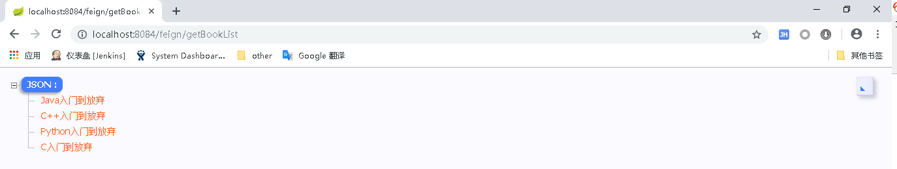

Feign是一个声明式的Web Service客户端，它简化了Web服务客户端的编写操作，相对于Ribbon+RestTemplate的方式，开发者只需通过简单的接口和注解来调用HTTP API。它支持Spring MVC注解和JAX-RS注解，还支持可插拔式的编码器和解码器。整合了Eureka，Ribbon和Hystrix，具有可插拔、基于注解、负载均衡、服务熔断等一系列便捷功能。
<project xmlns="http://maven.apache.org/POM/4.0.0" xmlns:xsi="http://www.w3.org/2001/XMLSchema-instance" xsi:schemaLocation="http://maven.apache.org/POM/4.0.0 http://maven.apache.org/xsd/maven-4.0.0.xsd">
<modelVersion>4.0.0</modelVersion>
<parent>
<groupId>com.cf</groupId>
<artifactId>sc-parent</artifactId>
<version>0.0.1-SNAPSHOT</version>
</parent>
<artifactId>sc-consumer-feign</artifactId>
<dependencies>
<dependency>
<groupId>org.springframework.cloud</groupId>
<artifactId>spring-cloud-starter-netflix-eureka-client</artifactId>
</dependency>
<dependency>
<groupId>org.springframework.cloud</groupId>
<artifactId>spring-cloud-starter-openfeign</artifactId>
</dependency>
</dependencies>
</project>package feign;
import org.springframework.boot.SpringApplication;
import org.springframework.boot.autoconfigure.SpringBootApplication;
import org.springframework.cloud.openfeign.EnableFeignClients;
@SpringBootApplication
@EnableFeignClients
public class FeignApplication {
public static void main(String[] args) {
SpringApplication.run(FeignApplication.class, args);
}
}package feign.inter;
import org.springframework.cloud.openfeign.FeignClient;
import org.springframework.web.bind.annotation.GetMapping;
@FeignClient("sc-provider")
public interface BookService {
@GetMapping("/book/list")
public String getBookList();
}
package feign.controller;
import org.springframework.beans.factory.annotation.Autowired;
import org.springframework.web.bind.annotation.GetMapping;
import org.springframework.web.bind.annotation.RequestMapping;
import org.springframework.web.bind.annotation.RestController;
import feign.inter.BookService;
@RequestMapping("/feign")
@RestController
public class FeignController {
@Autowired
private BookService bookService;
@GetMapping("/getBookList")
public String getBookList(){
return bookService.getBookList();
}
}server:
port: 8084
spring:
application:
name: sc-consumer-feign
eureka:
client:
registerWithEureka: false
serviceUrl:
defaultZone: http://localhost:8080/eureka/
Feign基于Ribbon实现，也具有Ribbon负载均衡的特性，可以将调用的提供者服务换成sc-provider-random(请参照SpringCloud学习笔记(2)：使用Ribbon负载均衡)来测试。
上面例子没有涉及到参数的传递，接下来测试下如何使用Feign构造带参数的请求，首先对提供者和消费者做如下更改：
//提供者Controller添加了两个参数，并打印到控制台。
@RequestMapping("/book")
@RestController
public class BookController {
@GetMapping("/list")
public String getBookList(String param1, Integer param2){
System.out.println(param1 + ":" + param2);
return "[\"Java入门到放弃\",\"C++入门到放弃\",\"Python入门到放弃\",\"C入门到放弃\"]";
}
}
//消费者Feign接口和Controller添加参数
@FeignClient("sc-provider")
public interface BookService {
@GetMapping("/book/list")
public String getBookList(String param1, Integer param2);
}
@RequestMapping("/feign")
@RestController
public class FeignController {
@Autowired
private BookService bookService;
@GetMapping("/getBookList")
public String getBookList(){
return bookService.getBookList("Java", 520);
}
}依次启动注册中心sc-eureka、提供者sc-provider、消费者sc-consumer-feign，启动消费者sc-consumer-feign时会启动失败：
java.lang.IllegalStateException: Method has too many Body parameters: public abstract java.lang.String feign.inter.BookService.getBookList(java.lang.String,java.lang.Integer)
更改Feign接口，为参数添加@RequestParam注解：
@FeignClient("sc-provider")
public interface BookService {
@GetMapping("/book/list")
public String getBookList(@RequestParam("param1") String param1, @RequestParam("param2") Integer param2);
}将参数封装到Map里，更改消费者Feign接口和Controller：
@FeignClient("sc-provider")
public interface BookService {
@GetMapping("/book/list")
public String getBookList(@RequestParam Map<String, Object> paramMap);
}
@RequestMapping("/feign")
@RestController
public class FeignController {
@Autowired
private BookService bookService;
@GetMapping("/getBookList")
public String getBookList(){
Map<String,Object> paramMap = new HashMap<String, Object>();
paramMap.put("param1", "Java");
paramMap.put("param2", 520);
return bookService.getBookList(paramMap);
}
}在参数较多的情况下，该方式可以简化Feign接口的编写。
OpenFeign的@QueryMap注解支持将自定义类型用于GET参数映射，由于@QueryMap和Spring不兼容，Spring Cloud OpenFeign提供了一个等价的@SpringQueryMap注解，可以用于自定义类型和Map类型的参数映射。下面将使用自定义类型Params作为参数，使用@SpringQueryMap注解来处理自定义类型的参数映射。
public class Params {
private String param1;
private Integer param2;
public String getParam1() {
return param1;
}
public void setParam1(String param1) {
this.param1 = param1;
}
public Integer getParam2() {
return param2;
}
public void setParam2(Integer param2) {
this.param2 = param2;
}
@Override
public String toString() {
return "Params [param1=" + param1 + ", param2=" + param2 + "]";
}
public Params(String param1, Integer param2) {
this.param1 = param1;
this.param2 = param2;
}
public Params() {}
}//提供者
@RequestMapping("/book")
@RestController
public class BookController {
@GetMapping("/list")
public String getBookList(Params params){
System.out.println(params.toString());
return "[\"Java入门到放弃\",\"C++入门到放弃\",\"Python入门到放弃\",\"C入门到放弃\"]";
}
}
//消费者
@FeignClient("sc-provider")
public interface BookService {
@GetMapping("/book/list")
public String getBookList(@SpringQueryMap Params params);
}
@RequestMapping("/feign")
@RestController
public class FeignController {
@Autowired
private BookService bookService;
@GetMapping("/getBookList")
public String getBookList(){
Params params = new Params("Java", 520);
return bookService.getBookList(params);
}
}Params [param1=Java, param2=520]